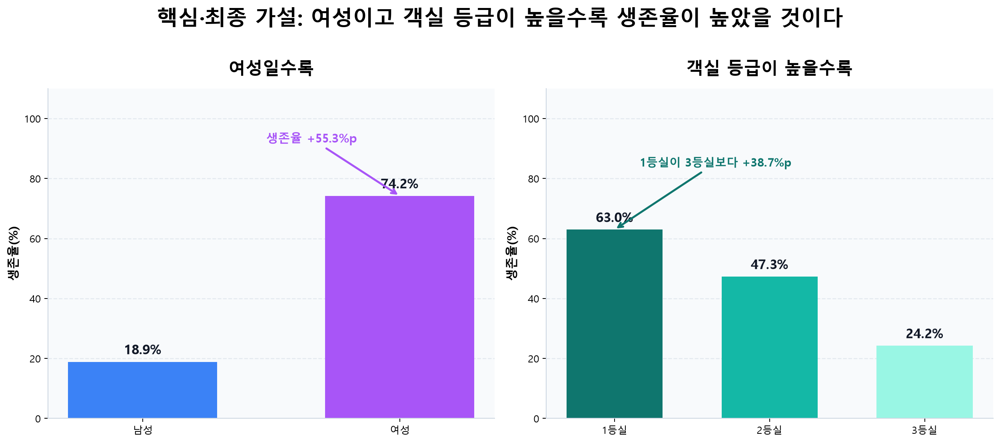
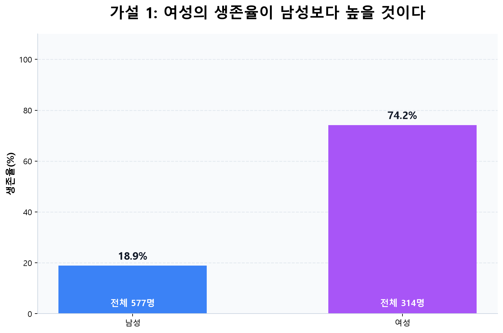
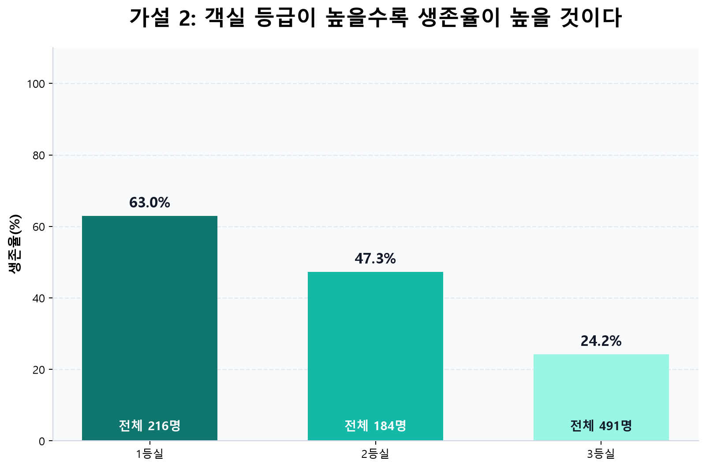
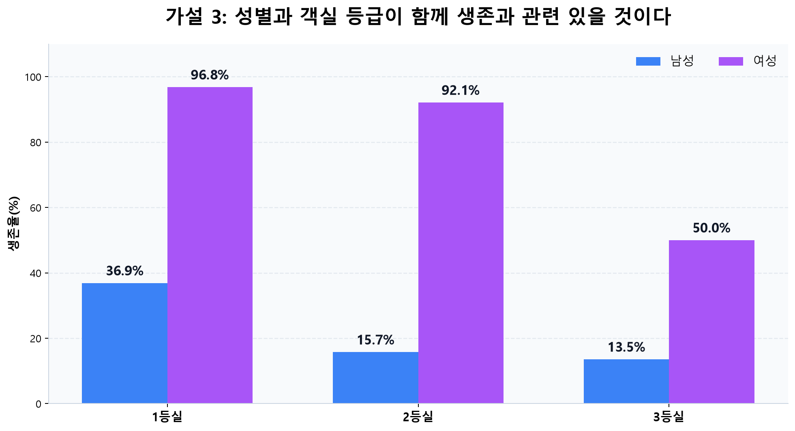
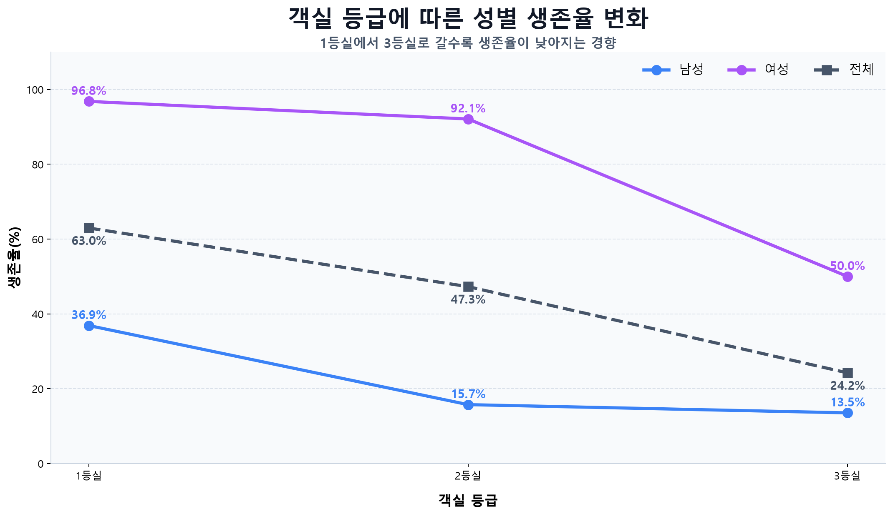
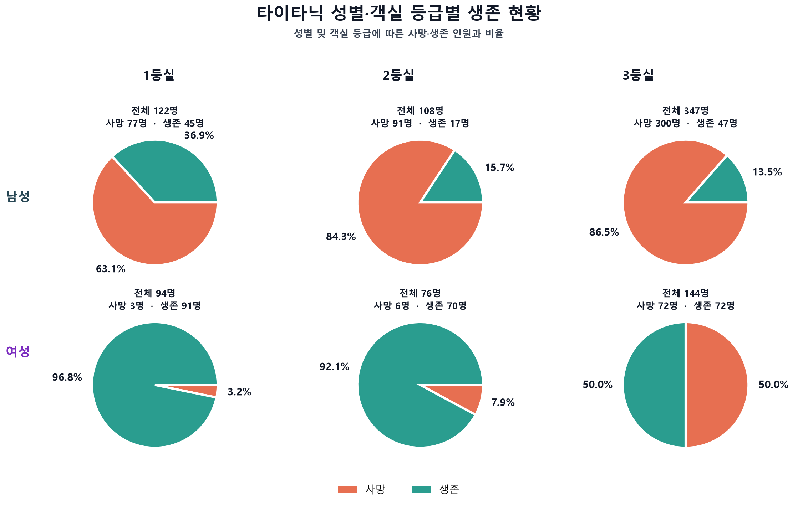
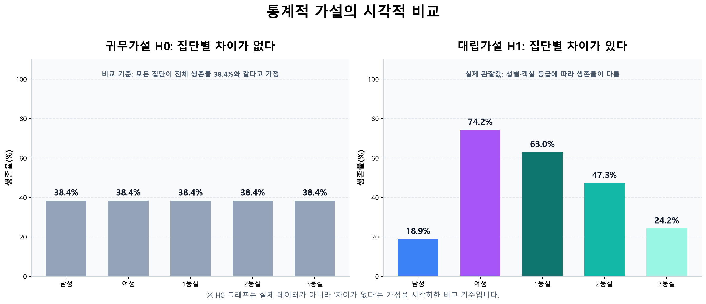

요약
분석 결과, 여성의 생존율은 남성보다 높았고 상위 객실 등급의 생존율은 하위 등급보다 높았다. 성별과 객실 등급을 결합한 6개 집단에서도 큰 차이가 확인됐다.
1. 데이터와 분석 범위
titanic.csv에는 승객 891명의 12개 변수가 있다. 핵심 결과 변수는 Survived(0=사망, 1=생존)이며, 이번 보고서의 주요 설명 변수는 Sex와 Pclass이다.
| 구분 | 내용 | 결측치 | 분석상 의미 |
|---|---|---|---|
| Survived | 생존 여부 | 0 | 분석 결과 변수 |
| Sex | 성별 | 0 | 핵심 설명 변수 |
| Pclass | 1·2·3등실 | 0 | 핵심 설명 변수 |
| Age | 나이 | 177 | 후속 다변량 분석 시 처리 필요 |
| Cabin | 객실 번호 | 687 | 결측률이 높아 주의 필요 |
| Embarked | 승선 항구 | 2 | 소수 결측 존재 |
이번 핵심 교차분석에 사용한 Survived, Sex, Pclass에는 결측치가 없어 891명을 모두 분석했다.
2. 연구 가설
- 가설 1: 여성의 생존율이 남성보다 높을 것이다.
- 가설 2: 상위 객실 등급 승객의 생존율이 더 높을 것이다.
- 가설 3: 성별과 객실 등급을 함께 고려하면 생존율 차이를 더 잘 설명할 수 있을 것이다.
귀무가설(H0): 성별과 객실 등급에 따른 생존율 차이가 없다.
대립가설(H1): 성별 또는 객실 등급에 따라 생존율에 차이가 있다.

3. 분석 결과
3.1 전체 현황
891명 중 342명이 생존하고 549명이 사망했다. 전체 생존율은 38.4%, 사망률은 61.6%로 사망자가 더 많았다.
3.2 성별에 따른 생존율
| 성별 | 전체 | 생존 | 사망 | 생존율 |
|---|---|---|---|---|
| 여성 | 314 | 233 | 81 | 74.2% |
| 남성 | 577 | 109 | 468 | 18.9% |
여성 생존율은 남성보다 55.3%p 높다. 단순한 표본 수 차이를 넘어 비율에서도 매우 큰 차이가 나타난다.

3.3 객실 등급에 따른 생존율

| 등급 | 전체 | 생존 | 생존율 |
|---|---|---|---|
| 1등실 | 216 | 136 | 63.0% |
| 2등실 | 184 | 87 | 47.3% |
| 3등실 | 491 | 119 | 24.2% |
1등실 생존율은 3등실보다 38.7%p 높다. 전체 생존율은 1등실 → 2등실 → 3등실 순서로 일관되게 감소한다.
3.4 성별과 객실 등급의 결합 비교
| 객실 등급 | 남성 생존율 | 여성 생존율 | 여성−남성 격차 | 판단 |
|---|---|---|---|---|
| 1등실 | 36.9% | 96.8% | 59.9%p | 여성 우위 |
| 2등실 | 15.7% | 92.1% | 76.4%p | 여성 우위 |
| 3등실 | 13.5% | 50.0% | 36.5%p | 여성 우위 |

3.5 꺾은선 그래프로 본 변화

- 여성은 1등실 96.8%에서 2등실 92.1%로 4.7%p 감소한 뒤, 3등실 50.0%로 42.1%p 급락한다.
- 남성은 1등실 36.9%에서 2등실 15.7%로 21.2%p 감소하고, 3등실은 13.5%로 2등실과 비슷하다.
- 두 선이 평행하지 않고 등급별 성별 격차가 달라, 성별과 등급을 함께 고려해야 한다. 다만 그래프만으로 통계적 상호작용을 확정할 수는 없다.
3.6 사망·생존 구성

4. 통계적 가설 검정
범주형 변수 사이의 관련성을 확인하기 위해 피어슨 카이제곱 독립성 검정을 적용했다.
| 검정 대상 | χ² | 자유도 | p값 | 판단 |
|---|---|---|---|---|
| 성별 × 생존 여부 | 263.05 | 1 | < 0.001 | 유의한 관련 |
| 객실 등급 × 생존 여부 | 102.89 | 2 | < 0.001 | 유의한 관련 |
| 성별·등급 6개 집단 × 생존 여부 | 350.68 | 5 | < 0.001 | 유의한 관련 |

5. 한계와 후속 분석
- 연관성과 인과성: 이 결과는 성별·객실 등급과 생존의 연관성을 보여 줄 뿐, 직접 원인을 확정하지 않는다.
- 누락 변수: 나이, 운임, 가족 동반, 승선 항구, 객실 위치 등이 함께 작용했을 수 있다.
- 표본 불균형: 3등실은 491명으로 가장 많고, 세부 집단도 여성 1등실 94명부터 남성 3등실 347명까지 크기가 다르다.
- 결측치: 나이 177건과 객실 번호 687건이 누락되어 후속 모델링에서는 별도의 처리 기준이 필요하다.
- 권장 후속 분석: 나이·운임·가족 규모를 포함한 로지스틱 회귀, 교호작용 검정, 효과크기와 신뢰구간 산출을 권장한다.
6. 최종 결론
전체 생존율은 38.4%였지만 여성은 74.2%, 남성은 18.9%로 큰 차이를 보였다. 객실 등급별로는 1등실 63.0%, 2등실 47.3%, 3등실 24.2%였다. 모든 객실 등급에서 여성 생존율이 남성보다 높았으며, 성별을 나누어 보아도 상위 등급의 생존율이 대체로 높았다.
7. 폴더 산출물 구성
| 유형 | 주요 파일 | 역할 |
|---|---|---|
| 원본 데이터 | titanic.csv | 891명, 12개 변수의 분석 원천 |
| 설명 노트 | 타이타닉_데이터_설명.md | 변수, 범위, 결측치 설명 |
| 가설 노트 | 타이타닉_생존_가설.md | 옵시디언용 가설·시각화·분석 기록 |
| 시각화 코드 | 생존여부_파이차트.py 외 4개 | 파이·막대·꺾은선·가설별 그래프 재생성 |
| 핵심 이미지 | 가설1_..., 가설2_..., 가설3_..., 핵심_..., 통계적가설_... | 보고서 본문 시각자료 |
| 최종 보고서 | 타이타닉_최종보고서.html | 현재 폴더 분석을 통합한 브라우저용 문서 |
이 HTML은 같은 폴더의 PNG 파일을 상대 경로로 불러온다. 보고서를 다른 위치로 이동할 때는 이미지 파일도 함께 복사해야 한다.